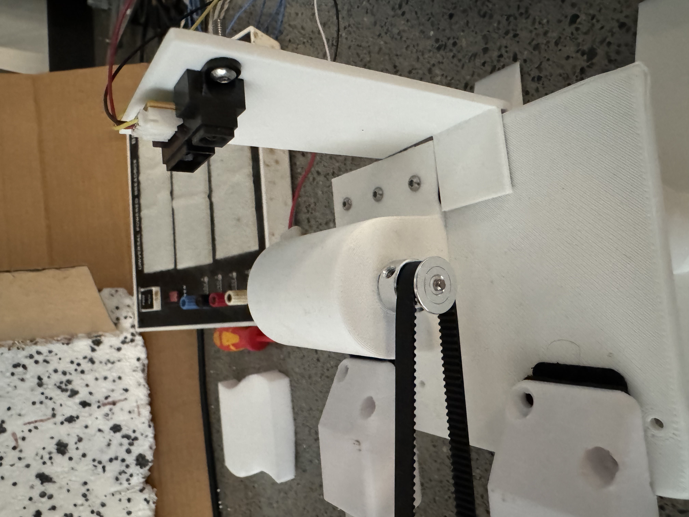
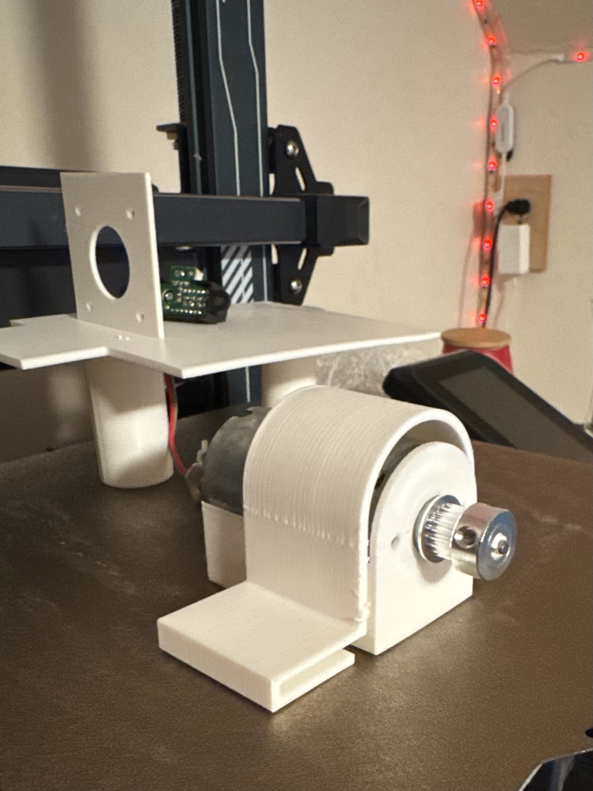

MECHATRONICS · ACOUSTICS · 3D PRINTING · CONTROLS
Dynamic Sound Attenuator
A mechatronics project that automatically positioned a sound absorber at the quarter-wavelength location associated with the dominant frequency in a room.

Project Overview
The goal of the project was to create a movable sound attenuator that could adapt its position based on the frequency of an incoming sound source.
A microphone measured the sound in the room and frequency analysis was used to identify the dominant frequency. The system then calculated the corresponding quarter-wavelength distance from a wall and moved the absorber to that location.
Operating Principle
The design used the relationship between sound frequency and wavelength. For a measured frequency, the wavelength was determined from the speed of sound and the absorber target position was set to one quarter of that wavelength from the wall.
This allowed the system to change its physical position as the dominant frequency changed rather than remaining fixed at a single location.
Mechanical Design
The absorber was mounted on a moving sled that traveled along a track supported by a frame. Several rail, cart, and motor-mount components were 3D printed to guide the cart and support the motion system.
A motor-driven belt mechanism moved the absorber along the track. The mechanical system had to remain stable while allowing the cart to move repeatedly to different target positions.

Sensing and Control
A microphone provided the acoustic input to the system. The measured signal was processed using frequency analysis to determine the strongest frequency present.
That frequency was converted into a required cart position, and the motor was then commanded to move the attenuator to the calculated distance along the track.
Prototyping and Testing
The project combined a physical prototype with an adjustable acoustic input. A speaker could be used to generate different frequencies so the system could be tested at multiple target positions.
Testing focused on whether the system could identify a dominant frequency, calculate the corresponding quarter-wavelength position, and move the absorber to the required location.
Engineering Challenges
The project required the mechanical, electrical, and software portions of the system to work together. Cart motion, motor actuation, microphone data, and frequency processing all affected the final system behavior.
Developing the prototype required iteration between the track geometry, 3D-printed components, motor-driven motion system, and the control logic used to determine the target position.
Skills Used
- Mechanical design
- Mechatronics
- 3D printing and prototyping
- Acoustic frequency analysis
- Motor control
- Sensor integration
- System testing and design iteration